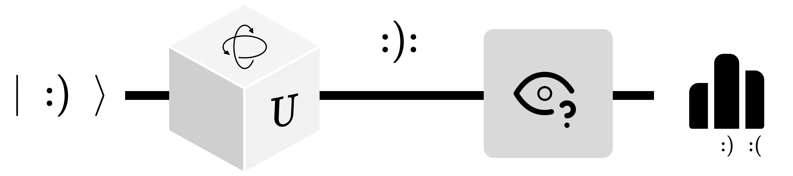
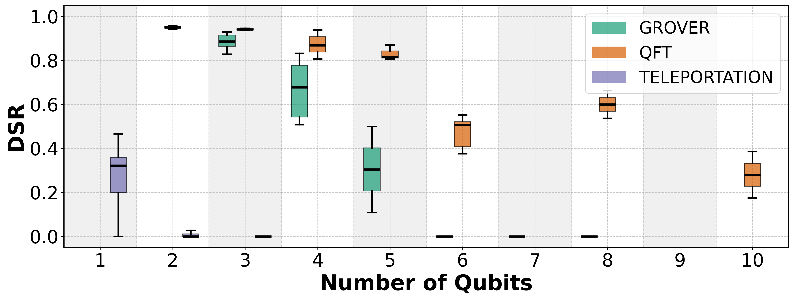

"I think I can safely say that nobody understands quantum mechanics."
— Richard Feynman, 1965
I also think so.
what if we could build tools that help us understand it?

Input state → Unitary transformation → Superposition → Measurement → Probability distribution
Assumption — access to quantum hardware
In classical computing, validation is straightforward:
assert output == expected
In QC, the output is a probability distribution.
Every run gives a different result.
1,281 total quantum jobs
Dependent variable: DSR computed from the target state and the returned histogram
Additional metrics: Hellinger Fidelity (HF) and Total Variation Distance Fidelity (TVDF)
The DSR measures the gap between the expected outcome and the strongest competitor in the histogram, normalized into a score from 0 to 1.
Not applicable to variational algorithms (e.g., VQE, QAOA)
Wrong expected outcomes invalidate the score entirely
Circuit structure matters more than raw gate count
Shot noise and calibration drift introduce variability
Are DSR and HF scores statistically different on the same jobs?
How often does one metric score higher than the other?
Confidence interval on the median (10,000 resamples)
All tests non-parametric — no normality assumption required

Grover, QFT, and vTP on IBM backends (optimization level 3) and Rigetti Ankaa-3 via AWS
| Algorithm | Provider | Qubits | Jobs | DSR | HF | TVDF |
|---|---|---|---|---|---|---|
| Grover | IBM | 2 | 19 | 0.97 | 0.97 | 0.97 |
| 3 | 40 | 0.87 | 0.90 | 0.85 | ||
| 4 | 8 | 0.68 | 0.65 | 0.54 | ||
| 5 | 3 | 0.11 | 0.07 | 0.06 | ||
| AWS | 2 | 20 | 0.90 | 0.93 | 0.93 | |
| 3 | 40 | 0.00 | 0.25 | 0.20 | ||
| 4 | 5 | 0.00 | 0.25 | 0.15 | ||
| QFT | IBM | 3 | 40 | 0.94 | 0.92 | 0.92 |
| 5 | 4 | 0.82 | 0.65 | 0.65 | ||
| 10 | 2 | 0.28 | 0.13 | 0.13 | ||
| AWS | 4 | 25 | 0.00 | 0.29 | 0.29 | |
| 5 | 12 | 0.00 | 0.04 | 0.04 |
As λ grows, expected peaks (|00⟩, |11⟩) shrink toward uniform.
"Nobody understands quantum mechanics."
Let's build tools so fewer people have to say
"I don't understand what my quantum computer did."
Thank you.